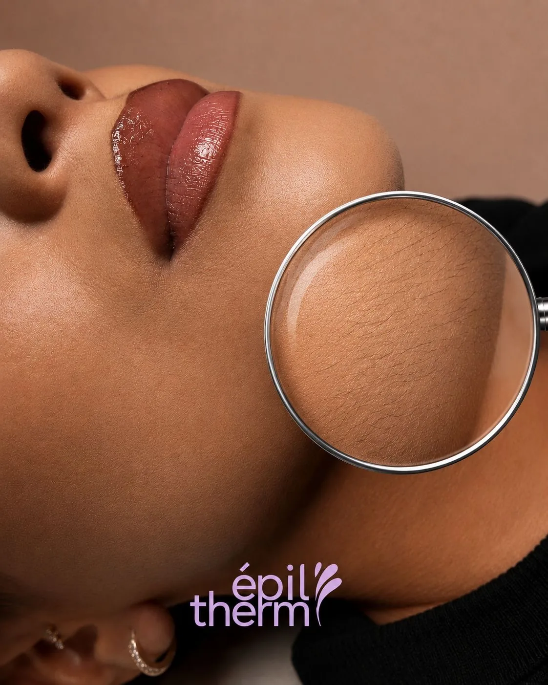
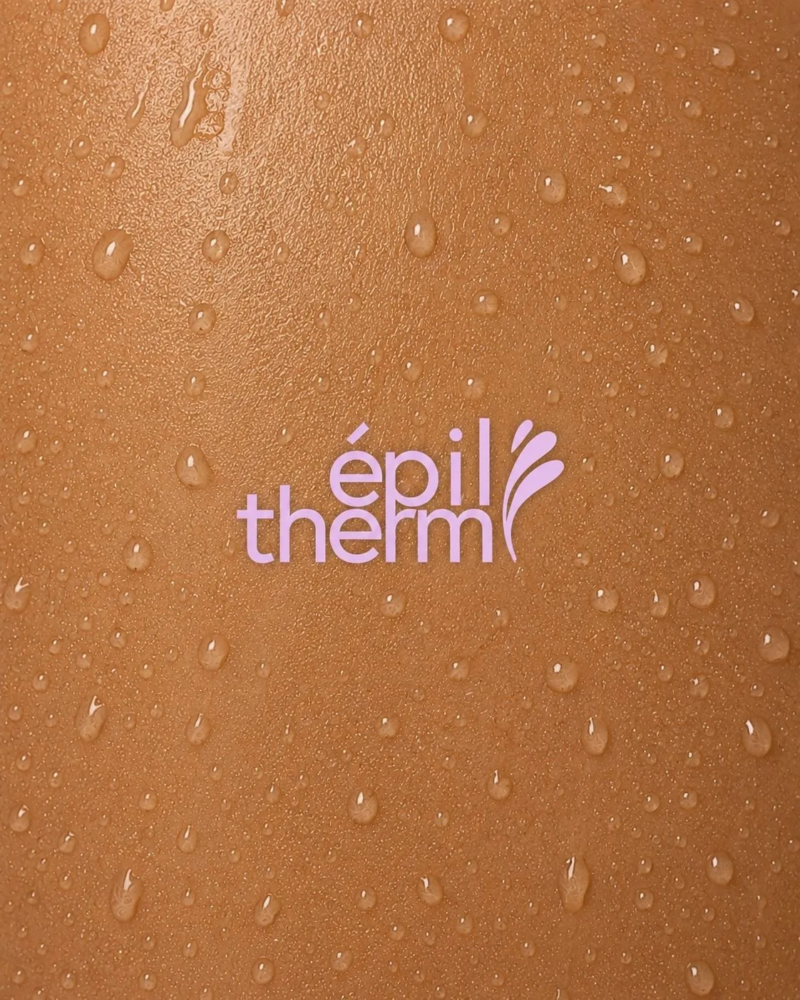
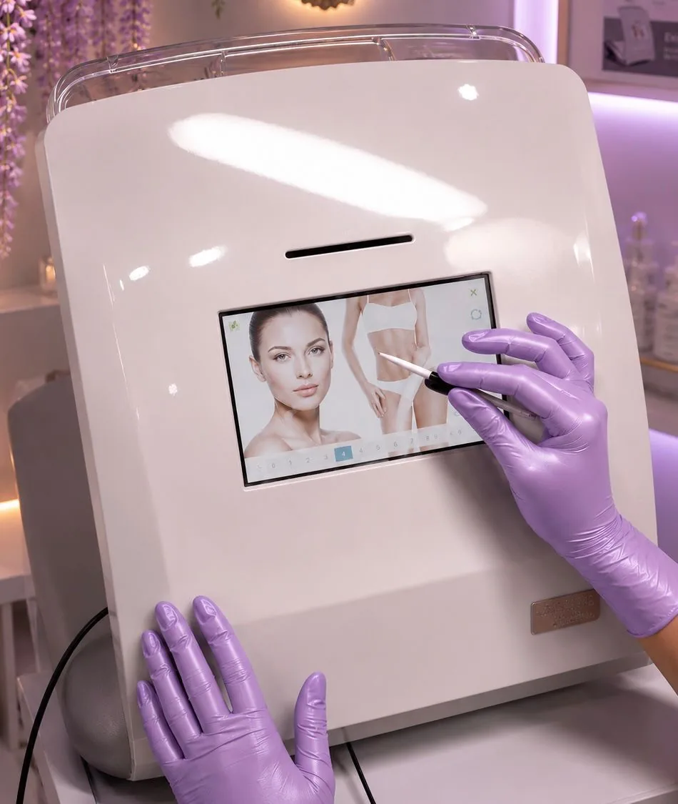
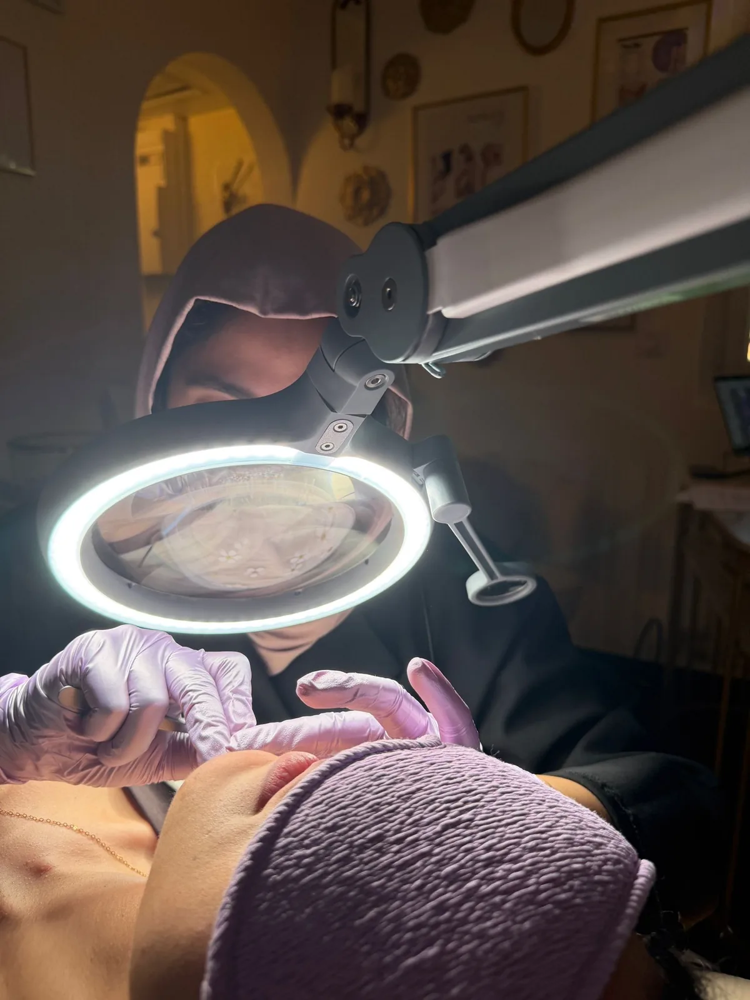
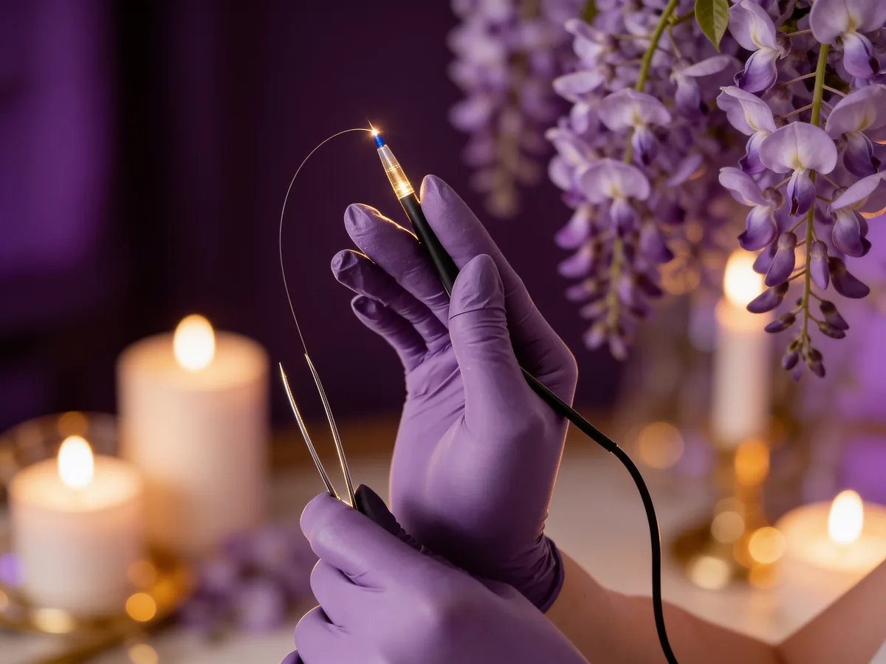
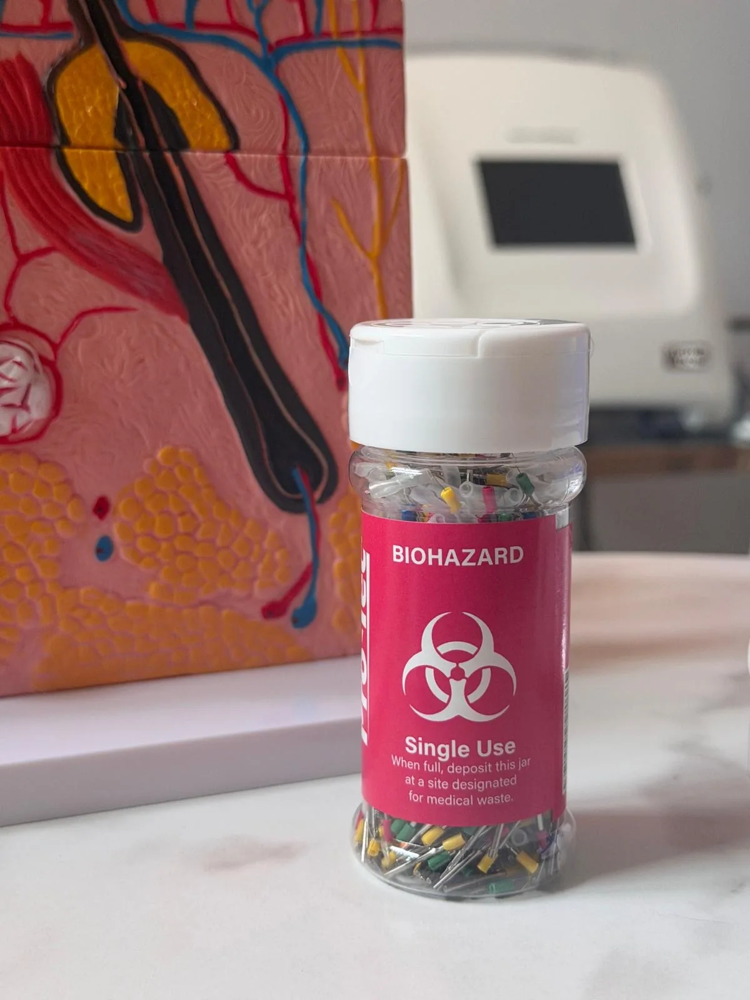

Résultats durables
La thermolyse agit à la racine du poil pour freiner durablement la repousse. Les résultats s'installent progressivement, pour une peau plus nette et durablement lisse.
[ Épilation définitive · Lyon ]
Poil par poil, traité à la racine. La seule méthode reconnue 100 % définitive pour ne plus jamais y penser.
Prendre rendez‑vous[ La méthode ]
Au fil des séances, le poil s'affine puis cesse progressivement de repousser. Une méthode précise et maîtrisée, adaptée à tous les types de peau et aux zones les plus sensibles du visage comme du corps.
[ Pourquoi la thermolyse ]
La thermolyse agit à la racine du poil pour freiner durablement la repousse. Les résultats s'installent progressivement, pour une peau plus nette et durablement lisse.
Chaque poil est traité individuellement avec une extrême précision. Une approche ciblée qui permet un travail maîtrisé, même sur les zones les plus délicates.
L'épilation électrique se réalise sur toutes les zones du corps et du visage. Même les zones sensibles ou difficiles à traiter sont prises en charge.
Au fil des séances, le poil s'affine, ralentit sa repousse, puis disparaît progressivement pour un résultat naturel et harmonieux.
La thermolyse s'adapte à toutes les carnations et à toutes les textures de poil, y compris les poils clairs, fins ou résistants.
Chaque séance est réalisée dans un cadre rigoureux, avec des protocoles d'hygiène stricts et un accompagnement entièrement personnalisé.
[ Les services ]
Chaque séance de thermolyse cible le poil individuellement afin de réduire durablement la repousse. Nos protocoles s'adaptent à toutes les zones et à tous les types de peau.
Une analyse complète de votre pilosité et de votre peau pour établir un protocole sur mesure.
La seule méthode réellement définitive, adaptée à tous types de poils et de peaux.
Équipement professionnel Apilus XCell Pro — un traitement précis, sûr et respectueux de votre peau.
Chaque séance est réalisée avec une extrême précision grâce à un équipement de pointe et des micro‑filaments stériles à usage unique.
[ Le parcours ]

Indispensable avant toute séance, même si vous avez déjà pratiqué l'électrolyse ailleurs.
La consultation est déductible si vous poursuivez directement avec une première séance.

Précision, confort et sécurité grâce à la technologie Apilus XCell Pro.
En fin de séance, un soin Vitaphase est inclus : luminothérapie, cataphorèse et micro‑vibrations pour purifier la peau, apaiser les rougeurs et accélérer la cicatrisation.

Le respect des soins après la séance garantit une bonne cicatrisation et optimise les résultats définitifs.

Apilus · 27 MHz[ L'appareil ]
Reconnu et utilisé par de nombreux instituts spécialisés à l'international, l'Apilus est apprécié pour sa fiabilité, sa précision et la constance de ses résultats.
Sa technologie 27 MHz diffuse l'énergie de façon extrêmement rapide et parfaitement maîtrisée : plus d'efficacité, plus de confort, et le respect de l'équilibre de la peau.
Son écran tactile permet de cartographier précisément chaque zone à traiter et d'ajuster l'intensité au plus juste, pour un soin entièrement personnalisé.
L'action reste strictement localisée au poil traité : un traitement précis, sécurisé et durable, y compris sur les zones sensibles.
[ Tarifs ]
Une tarification simple, au temps de soin — vous ne payez que le temps réellement passé.
[ L'histoire ]
De la résilience personnelle à l'excellence clinique.

Mettre un nom sur mes symptômes a été un soulagement, mais aussi le début d'un nouveau combat. Le Syndrome des Ovaires Polykystiques n'est pas qu'un trouble hormonal ; c'est un bouleversement qui se lit sur le visage et le corps, par une pilosité non désirée.
Comme beaucoup, je me suis tournée vers le laser, porteuse d'un immense espoir. Pour mon type de pilosité hormonale, ce fut un échec coûteux et décourageant. Les poils revenaient, parfois plus nombreux.
Refusant la fatalité, j'ai entamé des recherches approfondies. C'est là que j'ai découvert l'électrolyse, la seule méthode reconnue comme 100 % définitive. En vivant moi‑même le traitement, j'ai vu ma vie changer.
Je me suis formée aux standards les plus élevés pour offrir ce que j'aurais aimé trouver : une expertise, une technologie sans compromis, et une empathie sincère née d'un parcours identique au vôtre.
« Je ne voulais pas seulement résoudre mon problème, je voulais aider les autres à ne plus jamais se sentir seules. »
[ Nos engagements ]

Parce que j'ai connu les limites du laser, j'ai choisi l'excellence d'Apilus. Une précision poil par poil, plus confortable et efficace sur tous les types de peaux et de poils.

Ayant subi des protocoles approximatifs par le passé, j'impose à Épiltherm une rigueur chirurgicale : aiguilles à usage unique et stérilisation systématique.
Une écoute sans jugement. Je comprends les enjeux hormonaux et psychologiques liés à la pilosité. Vous êtes ici en sécurité, comprise et écoutée.
[ Elles témoignent ]
Premier rdv validé. Praticienne passionnée, à l'écoute, qui sait mettre en confiance, avec un petit univers où l'on a envie de rester. Je recommande vivement.
Je fais l'électrolyse chez Saira depuis plusieurs séances pour le visage et le menton, les résultats sont impressionnants. Elle est douce, pro et rassurante.
Praticienne en thermolyse exceptionnelle : douce, patiente et très claire. Elle réalise un bilan complet, travaille avec passion et cœur, humaine et chaleureuse.
Je fais 1 h de route depuis Mâcon pour voir Saira. Elle est passionnée, met très à l'aise, même sur les gros complexes, et inspire une vraie confiance. Un grand merci.
Saira est une perle. Après un an d'électrolyse ailleurs, j'ai enfin vu la différence. La repousse a nettement diminué, certaines zones sont presque nettes.
[ FAQ ]
Les réponses aux questions les plus fréquemment posées par nos clientes. Pour le reste, la première consultation est là pour ça.
Prendre rendez‑vousLe poil pousse par cycles : chaque follicule doit être traité pendant sa phase active. Plusieurs séances réparties sur quelques mois sont donc nécessaires. Le nombre exact dépend de la zone, de la densité et du contexte hormonal — un plan personnalisé est défini dès la première consultation.
La sensation varie selon les personnes et les zones. La technologie Apilus 27 MHz et des réglages personnalisés réduisent fortement l'inconfort, et le soin Vitaphase apaise la peau en fin de séance. La plupart des clientes décrivent une sensation tout à fait tolérable.
Grossesse, port d'un pacemaker, certaines affections ou infections cutanées sur la zone, peau récemment bronzée ou irritée, et quelques traitements médicaux. Tout est vérifié lors de la première consultation, avant le moindre traitement.
Non, lorsqu'elle est réalisée par une praticienne formée, avec des filaments stériles à usage unique et une hygiène stricte. L'action reste strictement localisée au follicule traité.
Contrairement au laser, l'électrolyse convient à toutes les carnations. En revanche, on évite de traiter une peau récemment bronzée ou ayant pris un coup de soleil : il est conseillé d'attendre qu'elle retrouve son état naturel.
Oui. Visage (lèvre, menton, joues, sourcils), corps (aisselles, bras, jambes, dos, torse) et zones sensibles ou intimes. C'est l'un des grands avantages de l'électrolyse.
L'Apilus, référence mondiale de l'épilation électrique par thermolyse. Sa technologie 27 MHz diffuse l'énergie de façon extrêmement rapide et maîtrisée, pour plus d'efficacité et de confort.